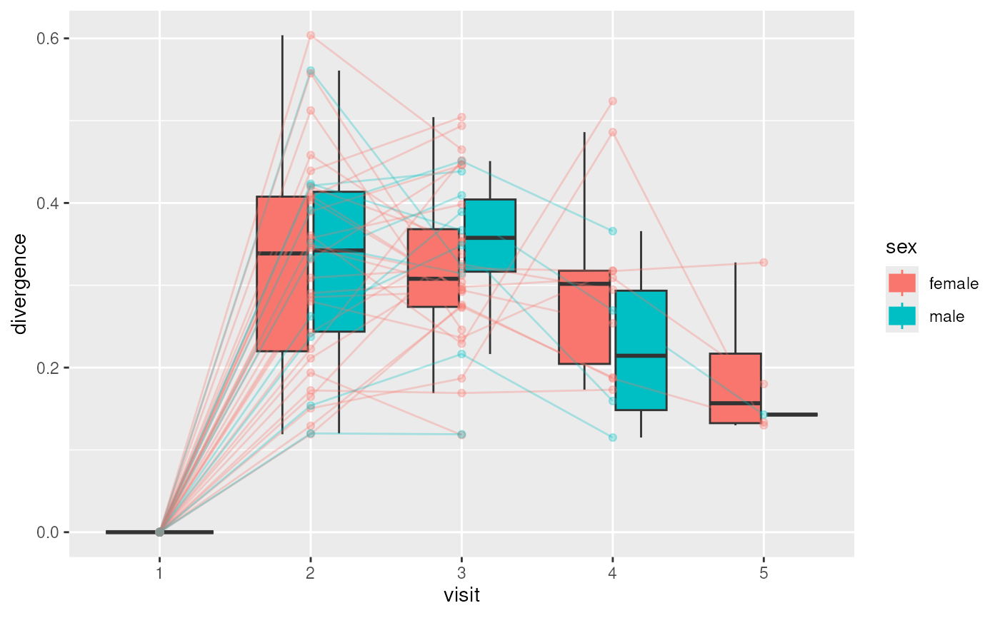
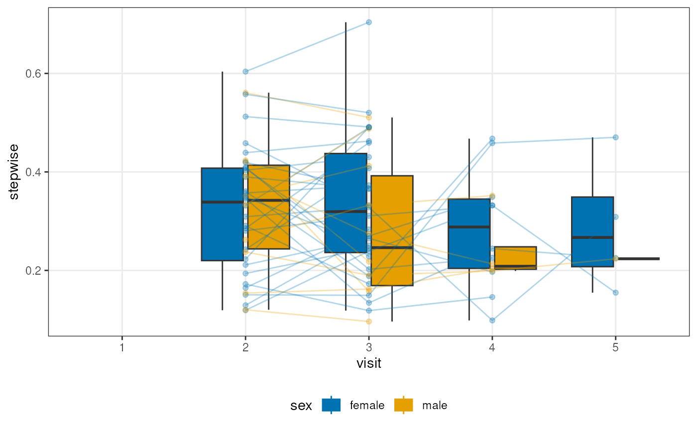
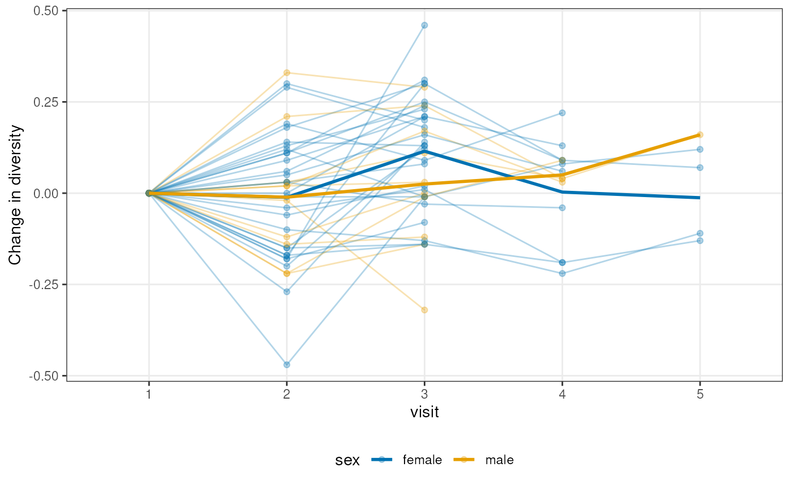
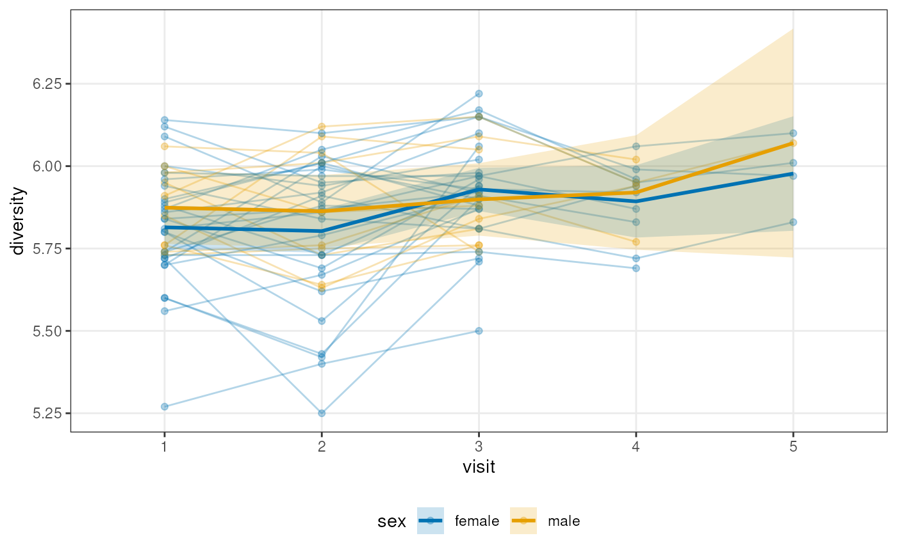
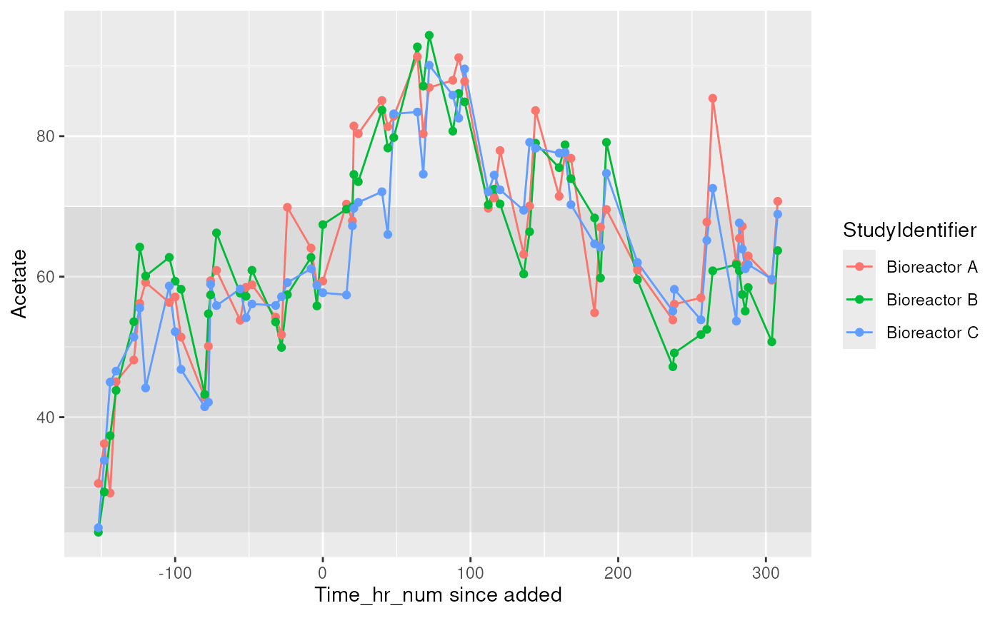
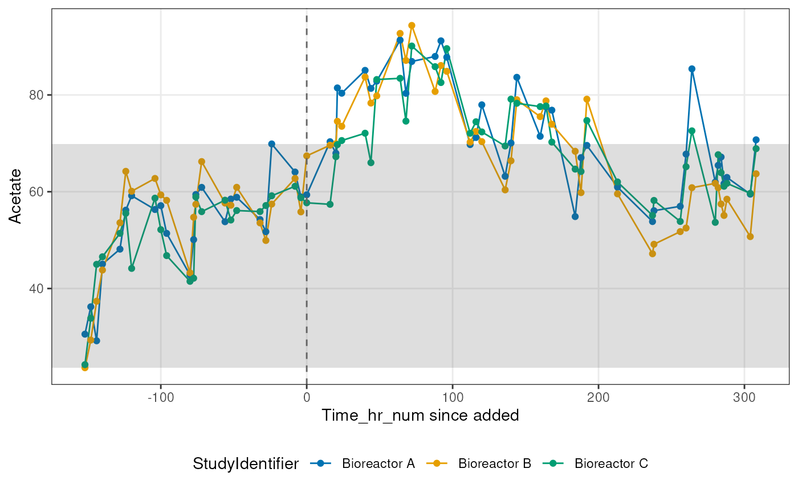
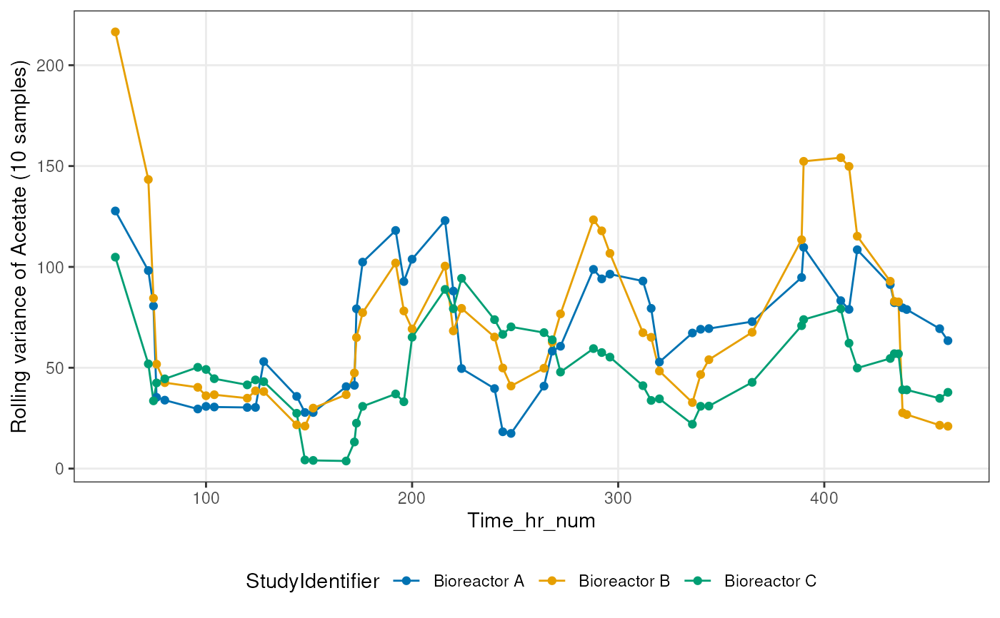
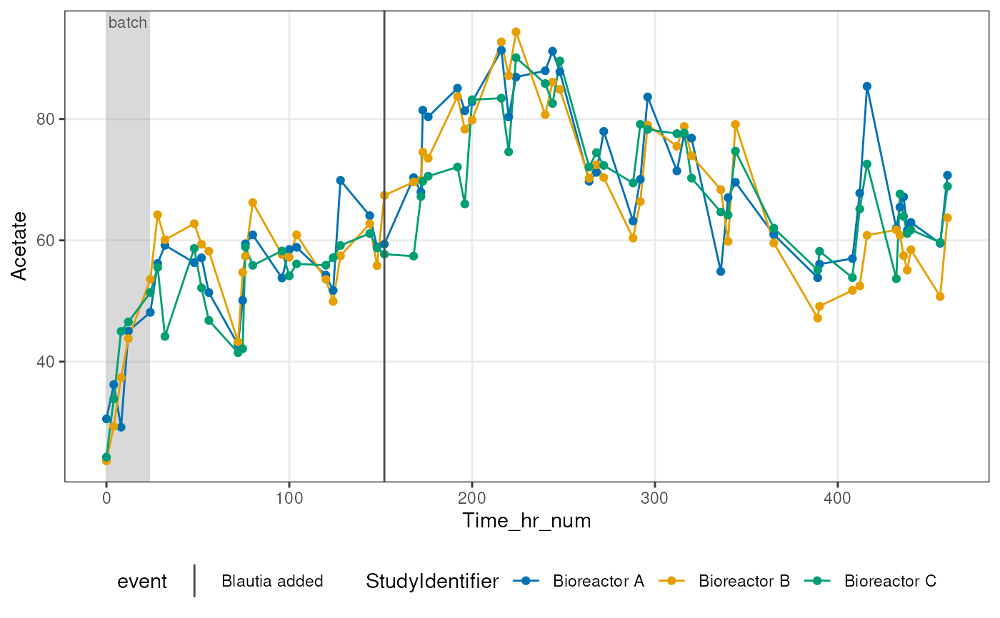

plotTrend() plots a feature, colData column or ordination
component over time: one line per subject or boxes per time point, with
optional group summaries, model fits, and values relative to each
subject's first sample or to an event.
plotTrend(x, ...)
# S4 method for class 'SummarizedExperiment'
plotTrend(
x,
y,
time.col,
group = NULL,
assay.type = "counts",
layout = c("line", "box", "violin"),
show.individuals = TRUE,
smooth = c("none", "mean", "median", "loess"),
band = NULL,
fit = NULL,
baseline = c("none", "difference", "fold", "log2fold"),
rolling = c("none", "mean", "variance", "acf1", "slope"),
window = 5,
detection = NULL,
period = NULL,
events = NULL,
align.to = NULL,
group.by = NULL,
facet.by = NULL,
max.gap = NULL,
...
)
# S4 method for class 'MultiAssayExperiment'
plotTrend(x, ..., experiment = 1L)Arguments
- x
a
SummarizedExperimentobject.- ...
additional arguments passed to the main layer (
geom_lineforlayout = "line",geom_boxplotforlayout = "box"orgeom_violinforlayout = "violin").- y
Character scalar. Specifies the feature, column or ordination component to plot: a column ofcolData(x), a row ofassay(x, assay.type), or"<dimred>:<component>".- time.col
Character scalar. Specifies the column fromcolData(x)that contains sampling times: numeric,Date,POSIXctor a factor of visits. Time differences, as inmax.gapandperiod, are in days forDateand hours forPOSIXcttimes.- group
Character scalar. Specifies the column fromcolData(x)that identifies subjects. (Default:NULL)- assay.type
Character scalar. Specifies the assay to retrieveyfrom whenyis a feature name. (Default:"counts")- layout
Character scalar. Specifies the plot layout:"line"draws one line per subject;"box"and"violin"draw boxes or violins ofyper time point, one pergroup.bygroup side by side. Subject lines and points stay at the centre of each time point. (Default:"line")- show.individuals
Logical scalar. WhenTRUE, draws subject lines and points. WhenFALSE, hides subject lines and points, leaving only boxes or the smooth curve. (Default:TRUE)- smooth
Character scalar. Specifies a group summary on top:"none","mean"or"median"(over the samples at each distinct time), or"loess"(loess curve). With irregular times, where most times have one sample, use"loess"or a factor of visits. (Default:"none")- band
Numeric vectorof length 2. Draws the range between these quantiles ofyat each distinct time, such asc(0.25, 0.75)for the interquartile range, pergroup.bygroup. (Default:NULL)- fit
Model results on the scale of
y, drawn over the data: acharacter scalarnaming a numericcolData(x)column of fitted values per sample, drawn as a dashed line per subject, or adata.framewith the columnstime.colandestimate, optionallylowerandupperfor an interval and thegroup.bycolumn for one curve per group. Without thegroup.bycolumn, the table draws one curve, such as a microbiota-for-age reference. Not combined withbaselineorrolling. For effects, such as differences between groups, useplotTimeEffect. (Default:NULL)- baseline
Character scalar. Expressesyrelative to each subject's first sample: unchanged ("none"), as the difference ("difference"), the ratio ("fold") or its log2 ("log2fold"). Ratios need positive first values. (Default:"none")- rolling
Character scalar. Replacesyby a rolling statistic over the lastwindowsamples of each subject:"mean","variance","acf1"(lag-1 autocorrelation) or"slope"(change ofypertime.colunit, from a least-squares line; per visit step for visits). Rising variance and autocorrelation are early warning signals of a transition. Windows count samples, also across breaks of the line; subjects with fewer thanwindowsamples are dropped. (Default:"none")- window
Integer scalar. Number of samples in the rolling window. (Default:5)- detection
Numeric scalar. Splitsyinto two panels, as in two-part models of zero-inflated data: its presence, a value abovedetection, as 1 or 0 ("Prevalence"), and its values in the samples where it is present ("When present"). Subject lines of the values break at absences, andsmooth = "mean"gives the prevalence at each time. Not combined withbaseline,rolling,fitor boxes and violins. (Default:NULL)- period
Numeric scalar. Wraps time into cycles of this length, intime.colunits, to show daily or seasonal patterns; each cycle is drawn as its own line. Cycles start at time 0, which forDateandPOSIXcttimes is 1970-01-01 (UTC), a Thursday. Not combined witheventsor afittable. (Default:NULL)- events
data.frame. Events or intervals to mark, one per row, with columnsstartand optionallyendandlabel, in the units oftime.col(visit levels for visits), relative to the event withalign.to: interventions such as antibiotic courses, or the time intervals where groups differ, as estimated by MetaLonDA or SplinectomeR. Rows with anendare drawn as grey bands with their label at the top, the others as vertical lines. Events apply to all subjects, unless they have thegroupcolumn andfacet.byisgroup: then each event is drawn in the panel of its subject. To draw time relative to an event of each subject, usealign.to. (Default:NULL)- align.to
Character scalar. Specifies the column fromcolData(x)with the time of an event for each subject, such as the start of a treatment, in the units oftime.col. Time is then drawn relative to the event, marked by a dashed line at 0, andsmooth,bandandfitare drawn separately before the event and from time 0 on. The column must not contain NA values, so remove subjects without the event first. Not available for visits. (Default:NULL)- group.by
Character scalar. Specifies the column fromcolData(x)that colours subjects, smooth curves and fits and splits boxes and violins. (Default:NULL)- facet.by
Character scalar. Specifies the column fromcolData(x)to facet by. (Default:NULL)- max.gap
Numeric scalar. Breaks a subject's line where consecutive samples are further apart than this, intime.colunits. For visits,NULLbreaks lines at visits without a sample; otherwiseNULLnever breaks lines. (Default:NULL)- experiment
Character scalarorinteger scalar. For aMultiAssayExperiment, the experiment to plot; its samples get thecolDataofx. (Default:1L)
Value
A ggplot object.
Details
Numeric and Date times are drawn on a continuous axis. Visits are
drawn in level order, including levels without samples. With
align.to, the times of fit tables and events are
relative to the event as well; for Date times they are in days.
The plot data hold all columns of colData(x), so further layers
can use them.
Fits that stop at an aligned event follow DiGiulio et al. (2015,
doi:10.1073/pnas.1502875112, Fig. 5). The prevalence and non-zero panels
of detection follow MaAsLin 3 (Nickols et al. 2026,
doi:10.1038/s41592-025-02923-9, Fig. 1b). Cycles of varying length, such
as menstrual cycles, are compared by rescaling each cycle to a common
length in a time column, then wrapping it with period (Gajer et
al. 2012, doi:10.1126/scitranslmed.3003605).
References
Bokulich NA, et al. (2018). q2-longitudinal: longitudinal and paired-sample analyses of microbiome data. mSystems 3(6):e00219-18.
Dakos V, et al. (2012). Methods for detecting early warnings of critical transitions in time series illustrated using simulated ecological data. PLoS One 7(7):e41010.
DiGiulio DB, et al. (2015). Temporal and spatial variation of the human microbiota during pregnancy. PNAS 112(35):11060-11065.
Gajer P, et al. (2012). Temporal dynamics of the human vaginal microbiota. Sci Transl Med 4(132):132ra52.
Nickols WA, et al. (2026). MaAsLin 3: refining and extending generalized multivariable linear models for meta-omic association discovery. Nat Methods 23(3):554-564.
Subramanian S, et al. (2014). Persistent gut microbiota immaturity in malnourished Bangladeshi children. Nature 510(7505):417-421.
See also
plotTimeEffect for effects over time.
Examples
data("hitchip1006", package = "miaTime")
tse <- hitchip1006
# Some profiles are stored twice; keep the first copy
counts <- SummarizedExperiment::assay(tse, "counts")
tse <- tse[, !duplicated(t(counts))]
tse <- tse[, tse$subject %in% names(which(table(tse$subject) >= 3))]
# Divergence from each subject's first sample, computed by miaTime,
# per visit (the order of each subject's samples), by sex
tse <- miaTime::addBaselineDivergence(tse, group = "subject",
time.col = "time", assay.type = "counts")
tse$visit <- factor(ave(tse$time, tse$subject, FUN = rank))
plotTrend(tse, y = "divergence", time.col = "visit", group = "subject",
group.by = "sex", layout = "box")

# Divergence from each subject's previous sample, computed by miaTime
tse <- miaTime::addStepwiseDivergence(tse, group = "subject",
time.col = "time", assay.type = "counts",
name = c("stepwise", "step_time", "step_ref"))
plotTrend(tse, y = "stepwise", time.col = "visit", group = "subject",
group.by = "sex", layout = "box")
#> Warning: Removed 38 rows containing non-finite outside the scale range
#> (`stat_boxplot()`).
#> Warning: Removed 38 rows containing missing values or values outside the scale range
#> (`geom_line()`).
#> Warning: Removed 38 rows containing missing values or values outside the scale range
#> (`geom_point()`).

# Change in diversity from the first visit, mean by sex
plotTrend(tse, y = "diversity", time.col = "visit", group = "subject",
group.by = "sex", baseline = "difference", smooth = "mean")

# Median diversity with the interquartile range, by sex
plotTrend(tse, y = "diversity", time.col = "visit", group = "subject",
group.by = "sex", smooth = "median", band = c(0.25, 0.75),
show.individuals = FALSE)

# Mean diversity per visit and sex from a linear model, with 95%
# confidence intervals; each subject has one sample per visit
cd <- as.data.frame(SummarizedExperiment::colData(tse))
model <- lm(diversity ~ visit * sex, data = cd)
means <- expand.grid(visit = levels(tse$visit), sex = levels(tse$sex))
means <- cbind(means, predict(model, means, interval = "confidence"))
names(means)[3:5] <- c("estimate", "lower", "upper")
plotTrend(tse, y = "diversity", time.col = "visit", group = "subject",
group.by = "sex", fit = means)
 # Acetate in three replicate bioreactors sampled every few hours
data("minimalgut", package = "miaTime")
tse <- minimalgut
plotTrend(tse, y = "Acetate", time.col = "Time_hr_num",
group = "StudyIdentifier", group.by = "StudyIdentifier")
# Acetate in three replicate bioreactors sampled every few hours
data("minimalgut", package = "miaTime")
tse <- minimalgut
plotTrend(tse, y = "Acetate", time.col = "Time_hr_num",
group = "StudyIdentifier", group.by = "StudyIdentifier")

# Fitted acetate of each bioreactor from a cubic time trend per reactor
cd <- as.data.frame(SummarizedExperiment::colData(tse))
model <- lm(Acetate ~ poly(Time_hr_num, 3) * StudyIdentifier, data = cd)
tse$fitted <- fitted(model)
plotTrend(tse, y = "Acetate", time.col = "Time_hr_num",
group = "StudyIdentifier", group.by = "StudyIdentifier",
fit = "fitted")
 # Hours since Blautia hydrogenotrophica was added at 152 h, against the
# range of acetate before it was added, with loess curves fitted
# separately before and after
tse$added <- 152
before <- range(tse$Acetate[tse$Time_hr_num < 152])
plotTrend(tse, y = "Acetate", time.col = "Time_hr_num",
group = "StudyIdentifier", group.by = "StudyIdentifier",
align.to = "added", smooth = "loess") +
ggplot2::annotate("rect", xmin = -Inf, xmax = Inf,
ymin = before[1L], ymax = before[2L], alpha = 0.2)
# Hours since Blautia hydrogenotrophica was added at 152 h, against the
# range of acetate before it was added, with loess curves fitted
# separately before and after
tse$added <- 152
before <- range(tse$Acetate[tse$Time_hr_num < 152])
plotTrend(tse, y = "Acetate", time.col = "Time_hr_num",
group = "StudyIdentifier", group.by = "StudyIdentifier",
align.to = "added", smooth = "loess") +
ggplot2::annotate("rect", xmin = -Inf, xmax = Inf,
ymin = before[1L], ymax = before[2L], alpha = 0.2)

# Share of bioreactors where Blautia was detected, and its counts when
# detected
plotTrend(tse, y = "Blautia_hydrogenotrophica", time.col = "Time_hr_num",
group = "StudyIdentifier", align.to = "added", detection = 0,
smooth = "mean")

# Acetate over the day, one line per day and bioreactor
plotTrend(tse, y = "Acetate", time.col = "Time_hr_num",
group = "StudyIdentifier", group.by = "StudyIdentifier", period = 24)
 # Rolling variance of acetate over 10 samples
plotTrend(tse, y = "Acetate", time.col = "Time_hr_num",
group = "StudyIdentifier", group.by = "StudyIdentifier",
rolling = "variance", window = 10)
# Rolling variance of acetate over 10 samples
plotTrend(tse, y = "Acetate", time.col = "Time_hr_num",
group = "StudyIdentifier", group.by = "StudyIdentifier",
rolling = "variance", window = 10)
 # Acetate with the batch phase and the addition of Blautia marked
events <- data.frame(start = c(0, 152), end = c(24, NA),
label = c("batch", "Blautia added"))
plotTrend(tse, y = "Acetate", time.col = "Time_hr_num",
group = "StudyIdentifier", group.by = "StudyIdentifier",
events = events)
# Acetate with the batch phase and the addition of Blautia marked
events <- data.frame(start = c(0, 152), end = c(24, NA),
label = c("batch", "Blautia added"))
plotTrend(tse, y = "Acetate", time.col = "Time_hr_num",
group = "StudyIdentifier", group.by = "StudyIdentifier",
events = events)
